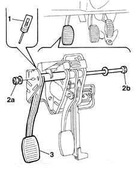

3330B26 clutch pedal - r+r
- Path
- Procedures > 33 BRAKING SYSTEM > 3330 HYDRAULIC BRAKING SYSTEM > 3330B pedal unit > 3330B26 clutch pedal - r+r
- Kind
- repair procedure (removal / refitting; the operation number is the code)
- Applies to
- all engines; all production periods
- Interactive page
- https://sloeber94.github.io/elrnDB-fMltpl/en/#/2891611
Applies to: all engines; all production periods
 Removing
Removing
 Refitting
Refitting1. Disconnect the clutch release cable from the pedal.
2. Undo the fixing nut (2a) and move the pin (2b) slightly backwards until the clutch bearing is released.
3. Remove the clutch pedal from the pedal assembly.

Applies to: all engines; all production periods
Refitting
RemovingPosition the clutch pedal and insert the fixing pin.
Tighten the nut fixing the clutch pedal pin to torque.
Connect the clutch release cable to the pedal.